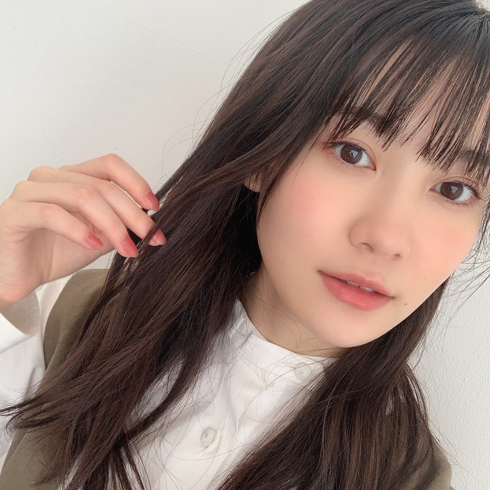

2020/1106Friマフラーいつからですか？ 松尾美佑
すっっっっごい寒がりなんですよ。
寒すぎて困ってます最近
そんな今日は漢検を受けました〜
仲間な人も多いのかな？と思ってます
難しかった｡です。
( ･᷄-･᷅ )
千葉県出身
高校2年生
16歳の
松尾美佑です¨̮
なんか、もっとしっかり自己紹介したいなぁって毎回思うんですけど
何を紹介しようか迷っちゃって迷っちゃって。
何がいいですかね？
気が向いたらたすけてください。

髪型悩み中
お返事からにしますね ꪔ̤̥
✽ ミュウちゃんは「朝」と「夜」どっちが好き？
多分夜行性です( Ꙭ)
✽ ショートケーキの苺はいつ食べますか？
私、1番最初に食べちゃうんですよね。
✽ 甘栗食べてる美佑ちゃんですがケーキで1番好きなのはモンブランですか？
タルトが好きです！！
✽ ブログに書いてた見たい映画って何ですか？
あ！言ってなかったですね！
アリスです！アリス・イン・ワンダーランドの方！
あの不思議な世界が大好きなんです
実はハロウィン過ぎた今も見れてないです
( ᵕ ᵕ̩̩ )
✽お勧めのシャンプー、リンス、くし、を教えてほしいです！
くしじゃなくてブラシになっちゃうんですけど、タングルティーザー良きです☺︎
シャンプー達は探し中です！
✽ 最近家で何してますか？
今日の漢検までは四字熟語書いてました！
結構楽しかったのでこれからもやりたいと思います(気が向いたらね)
✽ 憧れの衣装や着てみたいなって思う衣装はある？？
白石さんの卒業コンサートで2期生さんが『バレッタ』の時に着ていた衣装が凄い好きです！ちょっと大人っぽくて、ベルトがキラっとしていて、生地も好きだし、色合いも形も回った時のスカートのふんわり具合も全部好きです！
あと2018年の紅白歌合戦の『帰り道は遠回りしたくなる』の衣装もすっごく好きです！
まだまだいっぱいあります
衣装は近くで見たり、着させて貰った時に想像以上に細かくて綺麗で毎回びっくりします！たくさんの衣装に出会いたいなって思います☺︎
11月4日に発売されました！
ananさんに44人、全員で掲載して頂き私達新4期生も参加させて頂いています！
5人でハマっていることについて話したり、
初めて撮影でネイルをして貰ったり、
凄く楽しかったです！

本当に綺麗な色のネイルでした！
明日は〜
なお〜〜〜〜〜〜〜
寒いね☃︎
また5日後！
ミュウでした¨̮
ばいっっっっっっっ( Ꙭ )/''

PROFILE
新4期生リレー
202104
| SUN | MON | TUE | WED | THU | FRI | SAT |
|---|---|---|---|---|---|---|
| 1 | 2 | 3 | ||||
| 4 | 5 | 6 | 7 | 8 | 9 | 10 |
| 11 | 12 | 13 | 14 | 15 | 16 | 17 |
| 18 | 19 | 20 | 21 | 22 | 23 | 24 |
| 25 | 26 | 27 | 28 | 29 | 30 | |

コメント(189)
埼玉の陽一です。
俺、漢検2級持ってます。ひひひ笑
先日今季マフラーデビューしちゃいました！
駅まで自転車で行くんだけど、帰りが寒くて寒くて( ´ー`)
体調崩さないようにお互い気をつけましょ～
デコ出し似合ってるよ～～
ばいっっっっっっっ( Ꙭ )/''
更新だ〜(｣^o^)｣
ananみたよー！
ネックレス大事!!俺持ってないけどね...(^-^)
その代わりブレスレットは身につける時ある〜!!
ブレスレットテンション上がる!!
マフラーは来週辺りいけるかな...どーかな...
4期生ライブ2020決定おめでとうございます。
セットリスト、衣装など楽しみなこどだらけです。
ライブ当日までドキドキしながら過ごせそうです。
ミュウちゃん達は大変になるとおもいますが、体調に気を付けてくださいね。
じゃ、またね。
今日は夜コメです。
今日は『anan』についてコメントします。
昨日、『anan』を買うために、いつも行く本屋さんに行ったのですが、『anan』などの女性向けファション雑誌を買うのは、なかなかハードルが高くて苦労しました。
まず、よく買う男性向け写真雑誌とは置いてある場所が異なり、周りには女性客が多い中、男の自分が女性誌『anan』を手に取ると、女性客から変な目で見られるのではないかと気になり、またレジで精算するときも、店員さんに変な風に思われるのではないかと心配しながらも、「乃木坂46の特集があるから、大好きなミュウちゃんに会えるから」と自分を勇気づけながら、なんとか買うことができました。
（この気持ち、女性のミュウちゃんに分かるかな？）
「今ハマっていること」をお題にした新4期生の対談、楽しく読ませてもらいましたよ！
ミュウちゃんは洋服よりもアクセサリーにハマっていて、古着屋さんにも足を運ぶんですね！
お気に入りの二重のネックレスが見つかるといいですね！写真も期待していますね！
新4期生のみんなは今、焼き芋に夢中なんですね！
やっぱり女の子ですね！
でも食べ過ぎには注意ですよ！
くろみちゃんお勧めの焼き小籠包、新4期生みんなで食べに行ったら報告お願いします。
ミュウちゃんは毎日２分間プランクやってるんだね、偉い！
前に、1分37秒って言ってたから、また時間を延ばしたんですね！
自分はここのところサボってたけど、これから再開したいと思います。
ちなみに久々に今日やったら1分15秒が限界でした。
ミュウちゃんの「２分」を目標に頑張ります！
それではまたコメントするね。
ミュウちゃんにとって明日がいい日になりますように！(^.^)/~~~
オッハーーー！
朝からお空はにっこにこだよー
めっちゃ気分がいいねー
ミュウちゃんのネイル
とっても綺麗で似合ってるよ！
今日は何しようかな〜、ワクワク
テンション上げて頑張るぞーー！！
ﾜｧ───ヽ(*ﾟ∀ﾟ*)ﾉ───ｲ
ananみたよ！
アクセイイネ!!大事大事!!
ミュウちゃん
4期生ライブ楽しみっす☺️
漢検の結果は出たのカナ？
では
十一月は旧称で霜月。霜が下りるほど冷え込んでくるという月ですから、寒がりの松尾さんも毎日暖かくしておすごしください。
質問返しに乃木坂46の衣装についてのお話がありますが、エレガントなものからポップなものまで、幅広い魅力に満ちていてすてきな衣装ばかり。白石さんのYouTube公式チャンネルで74着もの衣装を着て『ガールズルール』を踊る企画がありましたが、どれも思い出深い衣装ばかりで感慨ひとしおでした。
きっとこれからもたくさんすてきな衣装が登場することでしょう。その中のいくつかは松尾さんも袖を通すのです。乃木坂46の未来がますます楽しみになってきます。わくわくしながら待ってますね。
ではまたコメント寄せます。
さらばだ、また会おう！（気球に乗って去りぬ〜）
質問です！
おすすめの勉強法を教えてください
これからも頑張ってください応援してます♥
こんにちは。
こんばんは。
美佑さんには多分初コメですね。
初めましてかずと申します。
寒いのが苦手というのと自己紹介にお困りのようなのでアドバイスさせていただきます。
寒さ対策。
1.体と服の間に空間ができる服を選ぶ。
体と服の間に体温が留まって温かさをキープしてくれます。
なので裏起毛がある洋服なんかを選ぶといいかなと思います。
2.筋量を増やす。
筋量を増やすと代謝が上がって体温が上がります。
効率の良い筋トレは10回で限界をむかえるようにするです。
腕立てでも腹筋でも背筋でも何でもです。
3.大きな血管を温める。
首周り、脇の下、足の付け根etc。
これは座ってたり動いてない時にやるといいかもですね。
自己紹介は基本的に男女共に好きな人の事は共有したいので持っている物やハマっている事、ハマりそうな事や気になっているもの。
何でも良いと思います。
でも毎回書かかなくてもそんな事があった時だけで良いと思います。
必ず書かなくては。では多分プレッシャーになります。
プレッシャーにならなければ良いと思います。
あとちょっとした変化は新鮮味もありますし。
こんなところで失礼します。
みた(^-^)
今嵌まっていること
最近ずっとやっていること
やってみたいお仕事
好きな色
好きな食べ物
毎回1個順番に書いていく
なんてのはいかがでしょう？
乃木坂と学校と漢検を頑張っているミュウ、すごい偉いね
結果出たら教えてね！
きっと受かってると思う
本当に乃木坂のメンバー、一人ひとりが個人の活動を頑張っていて、そしてグループでの活動での団結感がすごくて、乃木坂って本当に無敵です
ミュウちゃんのことこれからももっともっと応援させてください！！
本当に本当にこれからもずっと楽しみです
ミュウの清楚さ、可愛さ、全部大好き
ミュウ殿！！！
今日もキラリと光るブログセンス、最高ですぞ！
ミュウ殿の匠なる語彙力の数々に草を禁じ得ない！
1日後のブログ更新、楽しみにしてますぞ〜
ミュウちゃんお疲れ様です！
寒い日が続いてますねぇ
ここ２日くらいは暖かいなぁと思いましたけども、気温は13℃くらいでした。
僕的には暖かいけど、寒いと感じる人もいるよネ(^^)
ミュウちゃんは何度くらいで寒いと感じますか？
僕は4,5℃くらいで寒いなって思う！
寒冷地に住んでるので、寒さに強いのかなって思ってます！
いつもたくさんのコメントに、質問に答えてくれてありがとうございます♪
乃木坂46の衣装ってどれも可愛いし綺麗で、見ているだけで幸せになれるなぁ
たくさんの衣装を着てほしいですネ♪
雑誌とかでそういう機会ができたらいいなと思ってます！
ちなみに僕が好きな衣装は、『サヨナラの意味』のMV衣装です♪
ミュウちゃんにもいつか着てほしいな(^^)
今回はいつもより内容のないコメントで申し訳ないです…
いつも応援してます！
今日は遅コメです。
漢字検定を受験したんですね、偉いです！
自分は漢検受けたことないし、漢字が昔から苦手なので、尊敬します。
漢字がすらすら書けたり読めたりするのって、格好良くて憧れます。
漢検に限らず、資格取得など目標に向けて努力することは、とても良いことだと思います。
人はどうしても楽な方に流れていくもので、自分もまさに流されているのですが、貴重な時間を割いて辛いことに身を置くことは、人が成長していく上で大切なことですからね！
結果も重要ですが、それ以上に目標に向かって努力する過程が大事です！
こう書くと、ミュウちゃんの結果を期待してないように見えるかもしれませんが、もちろんミュウちゃんの合格は信じていますよ！
自己紹介での悩みごと、気が向いたので（いつも気が向いています）コメントしますね！
案①として、
今の定番の自己紹介に、プチ情報をちょい足ししてみるのはどうですか。
ミュウちゃんの好きなこと・ものを毎回ジャンルを変えて紹介してくれると、ファンは嬉しいですよ！
好きな食べ物、飲み物、音楽、本、あるいは学校の授業などなど、何でもいいと思います。
案②として、
5日間で、１番嬉しかったこと報告するのはどうですか。
嬉しかっことに限らず、気になったこと、ためになったこと、経験したこと、みんなに知らせたいことなど、プチ情報を報告してくれるのもファンは嬉しいですよ！
今思い浮かぶのはこれくらいですが、何かの参考になれば幸いです。
それではまたコメントするね。
ミュウちゃんにとって明日がいい日になりますように！(^.^)/~~~
オッハーーー！
今日もいい天気だよー
でも寒々だよー
また一週間が始まるよー
お互い頑張ろうね！
テンション上げて頑張るぞーー！！
ミュウちゃんお疲れさまι(｀･-･´)/
一昨日は姉のお誕生日だったからお祝いしたんですけどね、久しぶりにケーキを食べたので幸せな気分になりました、おはようございます。
自己紹介って悩みますよね〜年齢とか名前みたいに固定するなら、好きな食べ物？色？趣味？座右の銘？とかは無難かなぁと思うけど...
そうじゃないならその時聴いてる曲を「最近この曲を聴いてます、部屋を暗くしてぼーっとしながら聴くのが好きなんです、みなさんも良かったら聴いてみてください」みたいな文章にしておすすめするとか？
う〜んどんなのがいいんだろうねぇ( ¯꒳¯ )...
そうだ、こういうのはどう？
毎回自分の小さな情報を教えて行くっていう、今まで言ったこと無いやつとか、例えば、部屋の好きな場所...周りの人から言われる自分の癖...基本右利きだけど歯を磨く時だけは左で磨きます...とか笑
毎回1つ自分のどうでもいいような小さな情報を教えるっていうのはどうですか？
少しでもどんな些細なことでもミュウちゃんの事を知れるだけで嬉しいし、面白いと思うので是非とも( ᐛ )و
それでは、また(~ ˙-˙ )~
Today’s Recommend
迷い子 / Eve
駅前広場、高架歩道の植樹帯にも、可愛らしい 緑・黄・赤
イロハモミジの紅葉グラデーションにプチ感動！
みゆスマイル、うさこあらさん、｡｡ooOO(((*･ω･)ｱﾌﾞｿﾚﾑさん、こんにちは♪
＜漢検＞お疲れさまでした、ホッとした頭も体も少し休めてください
本日の髪型を思案中からスタート、ブログ更新をありがとうございます
おでこを出されている姿がお似合いなのだから、そのままがよろしいかと
キャッチフレーズを考える、うーん難しい宿題ですね
シンプルにご挨拶、或いはひと言を添えるが、美佑さんらしく思う⑅⃝
ananさん No.2224、まるで同席させていただいている錯覚
ページに収まりきれぬほどの楽しい時間を過ごせたようでなによりです
お好きな甘栗が殻付き派とは、炒りたての香ばしさでしょうか
郵便ハガキに✑・・⑥今回の特集で面白かった記事
P.080～座談会をもう一度、2021年版ではカラー掲載で見たく云々♫
"乃木坂46 4期生ライブ 2020"ご開催決定おめでとうございます!!
12月6日（日）はブログ更新予定日、段階をへて盛り上げてまいりましょう↗
それでは
今週はお困りになりそうな肌寒い日が多く、マフラー☒☒☒彡デビューかな
お風邪など召さぬよう体調管理を万全に、遠くても愛してるーッ♡
ミュウちゃんが漢検に合格していますように
ミュウちゃんに質問です!
Q.毎年、冬になると指が霜焼けになっちゃいます...
手足を温かく保つおすすめの方法はありますか⁇
ではでは!
今回はコメントするの遅くなってしまいました
またね!
バイバーイ
今日も遅コメです。
ノギザカスキッツACT2、もうすぐ始まりますね！
今回からは3期生さんも加わって、よりパワーアップしての新シリーズ、ワクワクです。
ミュウちゃんの新キャラがどうなるか、楽しみに待ってますよ！
このシリーズを通じて、3期生さんと仲良くなれるといいですね！
自己紹介、いいのありましたか？
なかなか難しいですよね。
でもミュウちゃんがブログを書くのに、いろいろと悩んでくれてること自体が、ファンとしては嬉しいですよ！
自分もコメントするとき、ミュウちゃんとは比べものにならないけど、結構悩むことがあります。
なので、あまり力まず、ゆるっと紹介してくれたら、それが一番嬉しいです！
タイトルの「マフラーいつからですか？」
明日、明後日が寒くなる予報なので、明日から使ってみるのはどうですか？
マフラー姿のミュウちゃんも今度見てみたいです！
最期に質問です。
○新制服の写真を載せてほしいです。
○高校生クイズの応援ソング「明日がある理由」、ミュウちゃんの感想を聞かせて！
○櫻坂４６の「そこ曲がったら櫻坂？」や日向坂４６の「日向坂で会いましょう」観てますか？
○そろそろミカンの季節、ミュウちゃんはミカン好きですか？
○ミュウちゃんはお散歩しますか？
以上です。
それではまたコメントするね。
ミュウちゃんにとって明日がいい日になりますように！(^.^)/~~~
みゆた〜ん♪
でもブログは更新された日に必ず読んでるよ〜。
漢字検定は２級かな？
でも２級って大学生だから違うかな？
勉強は好きだから本は買ったことあるのに、受けたことはないんだよね。
今日はついに！
乃木フェスに新４期生が追加されたよ！
みゆちゃんかわいすぎっす！
みゆちゃんは乃木フェスやったことあるのかな？
今日はみゆちゃんのカードをゲットしようとガチャしまくったものの、瑠奈ちゃんばかり出て…
200枚ガチャすると、好きなカードと交換できるチケットがもらえるのね。結局、そのチケットでみゆちゃんのカードをゲットしたよ。みゆちゃんのカードがゲットできたのは良いんだけど、ちょっとお金かかっちゃったなぁ…
これからいろいろなみゆちゃんのカードが出ると思うから楽しみにしてるね！
それじゃ、おやすみゆ〜
オッハーーー！
今朝は寒々だよー
布団が恋しいよー
水もめっちゃ冷たいよー
でも天気は良さそうかな
テンション上げて頑張るぞーー！！
大人の気分でした笑
今日は日付が変わりまして11月11日です。わんわんわんわんの日ですかね？(笑)そしてポッキーの日でもありますね！
食べる？(*°∀°)つ─━━━━……少し遅れたハロウィンのお菓子として貰ってやってください(笑)
先に言っておくとこのコメント1時11分に投稿する予定です。11月11日午前1時11分(反映されるか分からないけど)なんと！！1が沢山ですね(笑)仕事の都合上11時11分にコメントするって言うのは出来ないのでご了承ください。
ノギスキAct2始まりましたね！またこれで1週間の頑張る活力ができました！今回は期別コントだったけどこれからは3期4期混合でコントとかもあるのかな？美佑ちゃんと3期生の絡みとか見れるって思うと凄く楽しみだし、前回から言ってるけど是非"かつ家"に出て欲しい！Act2でかつ家やるかは分からなけどね(笑)あとは今回のあざと部みたいにちょっとあざとい感じの美佑ちゃんも見てみたいと思ってしまいました！
では少し質問を…
･ノギスキACT2でやってみたいコントとかありますか？
･もう冬ですけどスキーとかスノーボードってやった事ありますか？
･3期生メンバーとのエピソードありますか？
そういえば毛利PのYouTubeでやってるノギスキの収録裏話で美佑ちゃんがお話してるの見たよ〜、番組とかコントに対する想いや考え方すごいなぁって思います。頑張ろうとしてる姿みれて素直に応援したいって思えるしこれからも段々スキルが向上していくって考えたら凄く楽しみです！
さて今回はこの辺で。ブログ更新楽しみにお仕事頑張るね！美佑ちゃんも学校、お仕事頑張ってね！またコメントしま〜す、じゃあね〜！
今日は超遅コメです。
今日は寒かったですね〜
朝も冷え込んだし、昼間も日差しはあったけど気温が上がらなくて、昼間でも指先が冷たくなるので、何回も手をこすり合わせたり、椅子と太ももの間に挟んだりして、温めていましたよ！
まだ冬というには早いけど、暖房がまだ入っていないこの時期が、体感的には１番寒い時期かもしれませんね。
ということで、風邪には気をつけましょう！
質問「朝と夜、どっちが好き？」にお返事いただきありがとうございますです！
ミュウちゃんは夜行性なんですね。
自分も夜行性なので嬉しいです！
今日も寝落ちからの深夜コメする生活、改めたいのですが、これが中々ムズで困っています。
ミュウちゃんは寝落ちしたりしませんか？
良い対処法、気が向いたらアドバイスもらえると有り難いです！
ノギザカスキッツACT2、始まりましたね！
ネットで断片的ですが見ました。
東尼崎姉妹、面白かったですね！
さすが本物はすごいです。
柚菜ちゃんの尼崎、可愛かったし、歌が上手かったですね！
奈於ちゃんは、振り切った演技、さすがです！
ミュウちゃんの登場、期待していますね！
明日は「1」の付く日でミュウちゃんのブログの日！
楽しみに待ってます！
そう言えば、明日は11月11日、「1」が4つ並ぶ珍しい日ですが、何かの日ですかね？
1（A）が4つで「トランプの日」とかですかね？
それではまたコメントするね。
ミュウちゃんにとって明日がいい日になりますように！(^.^)/~~~
オッハーーー！
今日も天気良さそうだよー
でもでも寒々〜
今日はミュウちゃんの
ブログがある日ですね〜
楽しみですね〜
テンション上げて頑張るぞーー！！
今日は11/11！ポッキーの日だね！
みゆちゃんのブログ楽しみにしてるね！
今日も頑張ろうね。みゆスマイル〜！
最近すごく寒くなってきたからいよいよ冬って感じだね〜
だからお互い風邪とかインフルにはしっかり気を付けなきゃね
でも冬とか年末はクリスマスや歌番組がたくさんあるし、おいしい鍋料理もたくさん食べれるのはいい所だよね
コメントする